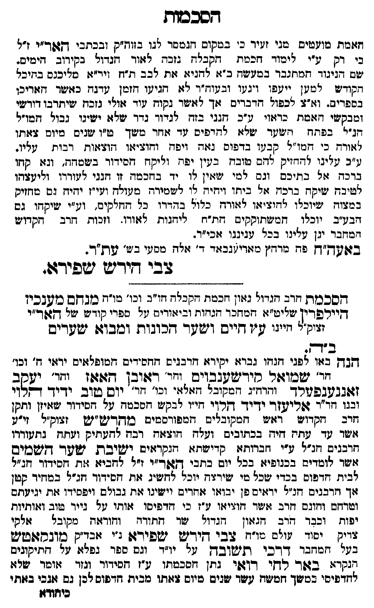

Neue Klartextfassung
האמת מועטים מני זעיר כי במקום הנמסר לנו בזוה"ק ובכתבי האר"י ז"ל כי רק ע"י לימוד חכמת הקבלה נזכה לאור הגדול בקרוב הימים. שם הניגוד מתגבר במשנה כ"א להניא את לב ת"ח ויר"א מליכנס בהיכל הקודש למען ייעפו ויגעו ובעוה"ר לא הגיע הזמן עדנה כאשר האריכו בספרים. וא"צ לכפול הדברים אך לאשר נקוה עוד אולי נזכה שיתרבו דורשי ומבקשי האמת באור ע"כ הנני בזה לגדור גדר שלא ישיגו גבול המו"ל הנ"ל בפתח השער שלא להדפיס עד אחר משך ט"ו שנים מיום צאתו לאורה כי המו"ל קבעו בדפוס נאה ויפה והוציאו הוצאות רבות עליו. וע"כ עלינו להחזיק להם טובה בעין יפה וליקח הסידור בשמחה, נא קחו ברכה אל בתיכם וגם למי שאין לו יד בחכמה זו הנני לעוררו ולעצהו לטובה שיקח ברכה אל ביתו ויהיה לו לשמירה מעולה ועי"ז יהיה גם מחזיק במצוה שיוכלו להוציאו לאורה כלול בהדורו כל החלקים, וע"י שיקחו גם הבע"ב יוכלו המשתוקקים הת"ח ליהנות לאורו. וזכות הרב הקדוש המחבר יגן עלינו בכל עניננו אכי"ר. באעה"ח פה מאריענבאד ד' אלה מסעי בש' עת"ר. — צבי הירש שפירא. ■ הסכמת הרב הגדול גאון חכמת הקבלה חו"ב וכו' כו"ה מנחם מענדכין היילפרין שליט"א המחבר הגהות וביאורים על ספרי קודש של האר"י זצוק"ל היינו עץ חיים ושער הכונות ומבוא שערים ■ ב"ה. הנה באו לפני הנהו גברא יקירא הרבנים החסידים המופלאים יראי ה' וכו' הר' שמואל קירשענבוים הר' ראובן האאן הר' יעקב זאנענפעלד והרה"ג המקובל האלקי וכו' הר' יום טוב ידיד הלוי ובנו הר' אליעזר ידיד הלוי הי"ו לבקש הסכמה על הסידור שאיזן ותקן הרב הקדוש ראש המקובלים המפורסמים מהרש"ש זצוק"ל זי"ע אשר עד עתה היה בכתובים ועלה הוצאה רבה להעתיק ועתה נתעוררו הרבנים הנ"ל ע"י חברייא קדישא הנקראים ישיבת שער השמים אשר לומדים בכנופיא בכל יום בכתבי האר"י ז"ל להביא את הסידור הנ"ל לבית הדפוס בכדי שכל מי שירצה יוכל להשיג את הסידור הנ"ל במחיר קטן אך הרבנים הנ"ל יראים פן יבואו אחרים וישיגו את גבולם ויפסידו את יגיעתם וטרחתם והונם הרב אשר הוציאו ע"ז כי הדפיסו אותו על נייר טוב ואותיות יפות, וכבר הרב הגאון הגדול שר התורה והיראה מקובל אלקי צדיק יסוד עולם מו"ה צבי הירש שפירא נ"י אבד"ק מונקאטש בעל המחבר דרכי תשובה על יו"ד וגם ספר נפלא על התקונים הנקרא באר לחי רואי נתן הסכמתו ע"ז הסידור וגזר אומר שלא להדפיסו במשך חמשה עשר שנים מיום צאתו מבית הדפוס לכן גם אנכי באתי
Original gegen neue OCR · Niqqud für Vergleich ausgeblendet
Original
האמת מועטים מני זעיר כי במקום הנמסר לנו בזוה"ק ובכתבי האר"יK004-001 ז"ל כי רקK004-002 ע"י לימוד חכמת הקבלה נזכה לאור הגדול בקרוב הימים. שם הניגוד מתגבר במשנה כ"א להניא אתK004-003 לב ת"ח ויר"א מליכנס בהיכל הקודש למען ייעפו ויגעו ובעוה"ר לא הגיע הזמן עדנה כאשר האריכו בספרים. וא"צ לכפול הדברים אך לאשר נקוה עוד אולי נזכה שיתרבו דורשיK004-004 ומבקשי האמת באור ע"כ הנני בזה לגדור גדר שלא ישיגוK004-005 גבול המו"ל הנ"ל בפתח השער שלא להדפיס עד אחר משך ט"ו שנים מיום צאתו לאורה כי המו"ל קבעו בדפוס נאה ויפה והוציאו הוצאות רבותK004-006 עליו. וע"כ עלינו להחזיק להם טובה בעין יפה וליקח הסידור בשמחה, נאK004-007 קחו ברכה אלK004-008 בתיכם וגם למי שאיןK004-009 לו יד בחכמה זו הנני לעוררו ולעצהו לטובה שיקח ברכה אל ביתו ויהיה לו לשמירה מעולה ועי"ז יהיהK004-010 גם מחזיק במצוה שיוכלו להוציאו לאורה כלול בהדורוK004-011 כל החלקים, וע"י שיקחו גם הבע"ב יוכלו המשתוקקים הת"ח ליהנות לאורו. וזכות הרב הקדוש המחברK004-012 יגן עלינוK004-013 בכל עניננו אכי"ר. באעה"ח פה מאריענבאדK004-014 ד' אלה מסעי בש' עת"ר. — צבי הירש שפירא. ■ הסכמת הרב הגדול גאון חכמת הקבלהK004-015 חו"ב וכו' כו"ה מנחם מענדכין היילפרין שליט"א המחבר הגהות וביאורים על ספרי קודש של האר"י זצוק"ל היינו עץ חיים ושער הכונות ומבוא שערים ■ ב"ה. הנה באו לפני הנהו גברא יקירא הרבנים החסידים המופלאים יראי ה'K004-016 וכו' הר' שמואל קירשענבוים הר' ראובן האאן הר' יעקב זאנענפעלד והרה"ג המקובל האלקי וכו' הר' יום טוב ידיד הלוי ובנו הר' אליעזר ידיד הלוי הי"ו לבקש הסכמה על הסידור שאיזןK004-017 ותקן הרב הקדוש ראש המקובלים המפורסמים מהרש"ש זצוק"ל זי"ע אשר עד עתה היה בכתובים ועלה הוצאה רבה להעתיק ועתה נתעוררו הרבנים הנ"לK004-018 ע"י חברייא קדישא הנקראיםK004-019 ישיבת שער השמים אשר לומדים בכנופיאK004-020 בכל יום בכתבי האר"י ז"ל להביא את הסידור הנ"ל לבית הדפוסK004-021 בכדי שכל מי שירצהK004-022 יוכל להשיג את הסידור הנ"ל במחירK004-023 קטן אך הרבנים הנ"ל יראיםK004-024 פן יבואו אחרים וישיגו את גבולםK004-025 ויפסידו את יגיעתם וטרחתם והונם הרב אשר הוציאו ע"זK004-026 כי הדפיסו אותו על נייר טוב ואותיות יפות, וכבר הרב הגאון הגדול שר התורה והיראה מקובל אלקי צדיק יסוד עולם מו"ה צבי הירש שפירא נ"י אבד"ק מונקאטש בעל המחבר דרכי תשובה עלK004-027 יו"ד וגם ספר נפלא על התקונים הנקרא באר לחי רואי נתן הסכמתו ע"ז הסידור וגזר אומר שלא להדפיסו במשך חמשה עשרK004-028 שנים מיום צאתו מבית הדפוס לכןK004-029 גם אנכי באתיK004-030
OCR · fehlbar
דזסככות זכי טוטטים - בבי זטיד כ' בשקים. דגטסר לגו בזוד"ק ובבתבי ד(גפד"יK004-001 ז"ל בי דקK004-002 ע"י ליבוך חזכסח חסבלח גזבח ילוזוד דגדו' בקידוב חיכיים. שש דגיגוד חמוזגבך בטשישח ב-ז: לדזגיז: זזוזK004-003 לב ב ז"ח ויד"זו טליכגם בזיכי חקודיש חטין יייגפו וגנו וב טוחז"ך 9גו דגיטו חזכון טרגח בזוישר חזזזדיכו בספדיב. וזז"2 חכפול דבדים זוך צוישר בקוץ פוד ז:ולי נזכח ישיתדבו דידשיK004-004 ומבקשי זזזסדג בדז:וי ש"כ אגגי בזח לגרוד גדד ידלג: ייעיגיK004-005 גבול זשו"ל גר' בפחד ז גוד רז( לדרפים וד ז(זדר בוישך ש"ו ישנים ביום 3 זזתו יוד כ' מו"ת קב טו בדפום גז(דז ויפג ודוביזו חזוצז:ות דבותK004-006 עליו. גב עינן "זדזיק לדב טובח ב נין ופח ויקץ חסידוד ביגשדח- וגזזK004-007 קחו בדכד גולK004-008 בתיכם וגס חטי יוזזין ו יד בשזכטד זו חגגי 9י:ודרו ואיבדו אטיבד ישיקח בדכץ זול ביזו וידויK004-009 לו סיסידח טופולד וגי"ז ידיחK004-010 גם בוזזיק נבוש יעיוכלו צדזידיזוו 9ז:ודז כול בדזדדוK004-011 כל דדזיקים- ונ"י ישיקזו גס חביג"ב יוכלו. דבייעחוססיס חת"ח אידגוז נצודו. וזכו זדב דקדויט דבזזבדK004-012 יגן טפיגוK004-013 בכל טגיגבו ז(כי"ד. בזושד"ן פח בזדד"ן מולדיי(גכ(דK004-014 ד' זילח טסי ב ע' שת . דבי דידי יטפידע. דחסככוד חדכ דגרוי גציון חככד. דקבלK004-015 חו"ב וכו' כוח בובדזש כושבכין ד(יירפרין ישליט"ז: חכודכדך חזגדו וביז(ודיש יזל ספדי קוד ע ישל ד[זוך"י זיקי חייני ש"ו זייש וישטך דזכובות וכובוזז ישפדיס ב"ד . בדן בזוו צפני זגדו גבדי: יקידז: (דבגיש וזזסידיס דזטופלוזיס ידזוי ח'K004-016 וכו' חד' ישסו::ר' סידיעטבבוים (ודד' דג(ובן דזוזוז יחד' ישקב (זזבגדגפשרך וגרהג אובל ז"ייזז' ובי' דר' יוס(כשוב ידיך ללח ובגו זד"ד ג:רישזד ידיך דקרךי חי"ו לבקנ: זסכטח טל חידוד ישוזיזןK004-017 ותקן זרב קדוש דו"ט חכקובליס . חחפורסכים בולךיש"ט זבוק"י זי"ט זשד טךד טחזח חיש בבתוביש וטצח חובצזח דבד לזטתזיק וגתח בגחזעודדו זרבגיש חג"לK004-018 ע"י זבדות:) קריישח ז: -:קדצוישK004-019 ישיבת ישט- גיפכיש גישד לוטדיש בכגופיז:K004-020 בכל יוב בתבי דוד"י ו"ל לזביז: ז(ת סידור ד:"ל לביד. זדעוםK004-021 בכדי ישכל סי ישירדחK004-022 יוכל לדישיג ציד. חס-דוד זג"ל בטחידK004-023 קטן זוך דבבי דנ"י ידי:ישK004-024 פן יבוזוו זוחזדיב ייישיגו צת גבורםK004-025 ויפסידו זז. יגיגחס ושדחזש וגוגם דזדב וויר דושויזזו י:-זK004-026 כי דזדפיסו מזותו טל בייד שוב ווזותיות יפוג וכבד דדב חגזזון חגרוי ישר חחזודח ודודזזח כקובל זולקי [דיג יסור זויש גו"ח 0 בי דזיד(זש ישפירזו :י זיבז"ק סובחז:טיש בגי חכדבך דדכי תישובדך ניK004-027 יו"ד וגס פפד גפי. גל חתיקוניס נגקר:: בגז- רדי ד-יגפי בחן חזסבטתו ע-ז זסידוד (גזד זזוכך ישרו: לחדפיסי בסישך זכישח שדK004-028 שנים כיום 4זזתו טכיחז חזדפוס תכןK004-029 גם גכי בווחי כיוזודזזK004-030